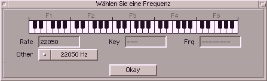

In this window you could select the sampling rate. You can do it
in the following ways :
| method | description |
|---|
| mouse | Simply click on the wished note in the keyboard. Rate
and referring note will be shown in the fields below. |
| keyboard | Choose with F1-F5 the octave and select the
pitch with the following keys :
s d g h j
y x c v b n m
|
Below the keyboard-image you see the rate, note and frequency. With the cycle-gadget
below you can choose between the often used rates.
| sampling rate | typical application |
|---|
| 8000 Hz | Sound boards (typical for SND-AU samples) |
| 11025 Hz | Sound boards (typical for old samples) |
| 22050 Hz | Sound boards (typical frequency oft most samples) |
| 28867 Hz | maximum playback rate of the Paula-chip in normal mode |
| 32000 Hz | Consumer DATs and samplers |
| 44100 Hz | CD-Player |
| 48000 Hz | DAT-Recorder/Player |
| 57734 Hz | maximum playback rate of the Paula-chip in productivity mode |
| 96000 Hz | high quality audio processing |
With the cycle gadget PlayMode, you can choose, if you would like
to listen to the sample while choosing the playback rate. If you have chosen PlayMode=PlayAll
and click onto the keyboard panel, you will immediately hear the sound in the respective tune.
Of this only aplies to selecting the playback-rate of an already existing sound (when
choosing the playback rate in operators like Noise, then there has not yet been calculated anything).
After clicking onto Okay the values will be accepted.
|